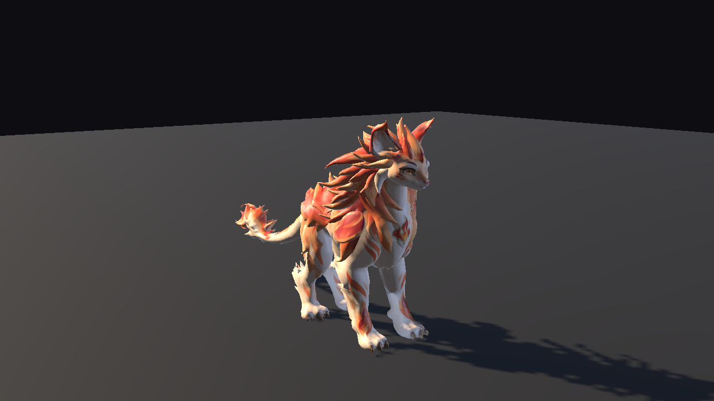
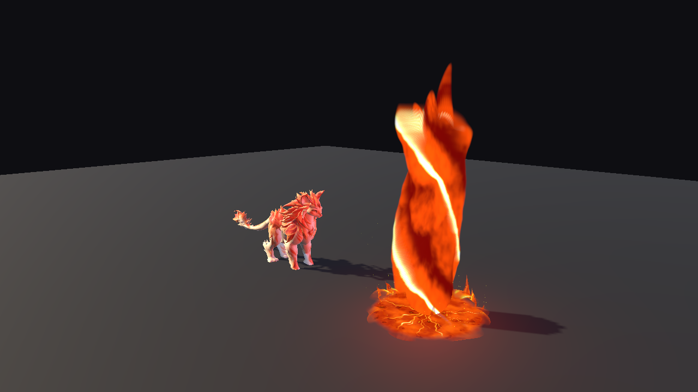
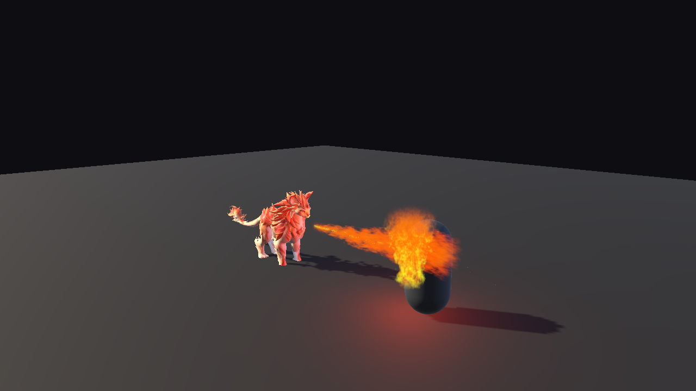
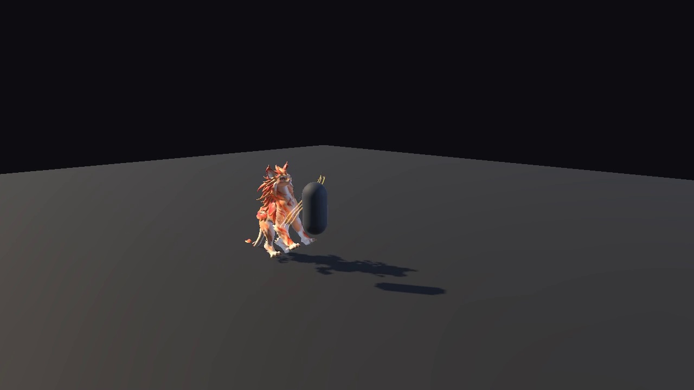
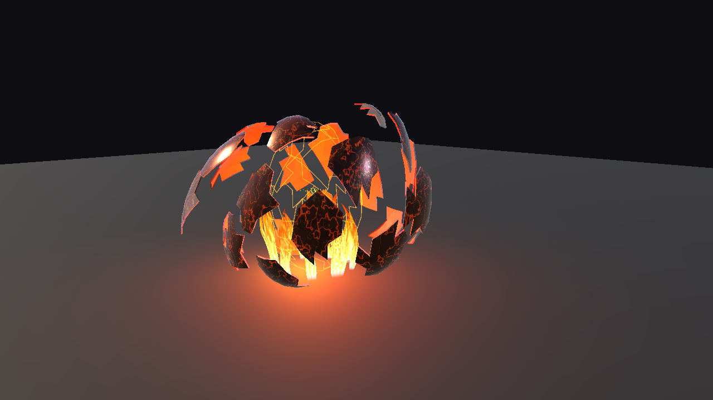
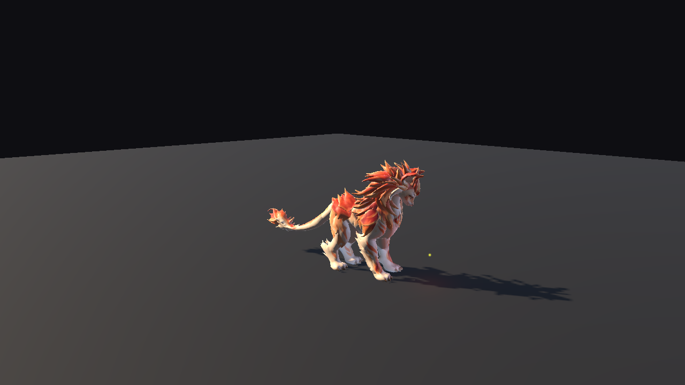

FIRE FAMILIAR · UNITY URP
Félin de Feu.
Curiosity, warmth, and a fiery temperament.
A stylized quadruped with three fire attacks and a playful arrival: a moving ember sparks a chase.
Watch the demonstration↗Unity pack in preparation

24native clips¹
3attacks with effects
URPUnity demonstration
43bones · Generic rig
01 / IN MOTION
The fire, in the engine.
Actual Unity footage: egg reveal, attacks and recovery.
02 / THREE ATTACKS
Three distinct gestures.
A diagonal claw strike, a projectile with an erupting pillar, and a continuous flame breath.

Fireball
Incandescent projectile, ground crown and axial rotating pillar.

Flame breath
A mouth-following jet and flames on the target surface.

Claw strike
A raised diagonal strike with three glowing trails.
03 / A PLAYFUL ARRIVAL
A spark of personality.
The egg fractures into irregular pieces. The familiar appears, follows a moving ember, then reaches for it before settling down.
Walking, start and stop, turns, feeding, rest, knockout and recovery complete the demonstration.


04 / CONTENT
A character asset for your own game.
Native Unity animations, original procedural fire shaders and editable Blender, GLB and rigged FBX sources. Inventory, damage rules and navigation are implemented by the developer.
The base model and textures originate from AI-assisted Meshy generation. Animation, articulated mouth, eyelids, original effects and Unity integration were developed within the project.
Content & limitations
- Rig
- Generic · 43 bones
- Animations
- 23 body clips + independent Blink
- Tested version
- Unity 6000.5.9f1 / URP 17.5
- Platform
- Windows / Direct3D 11
- Sources
- Blender · GLB · FBX
¹ 24 native clips include an alternate walk, an authored walk–run sequence and independent Blink. No audio or LODs. Mobile, HDRP and Built-in are not certified. Close-ups can reveal fur intersections, skin creases or eyelid edges. Transparent volumetric effects have a hardware-dependent GPU cost.